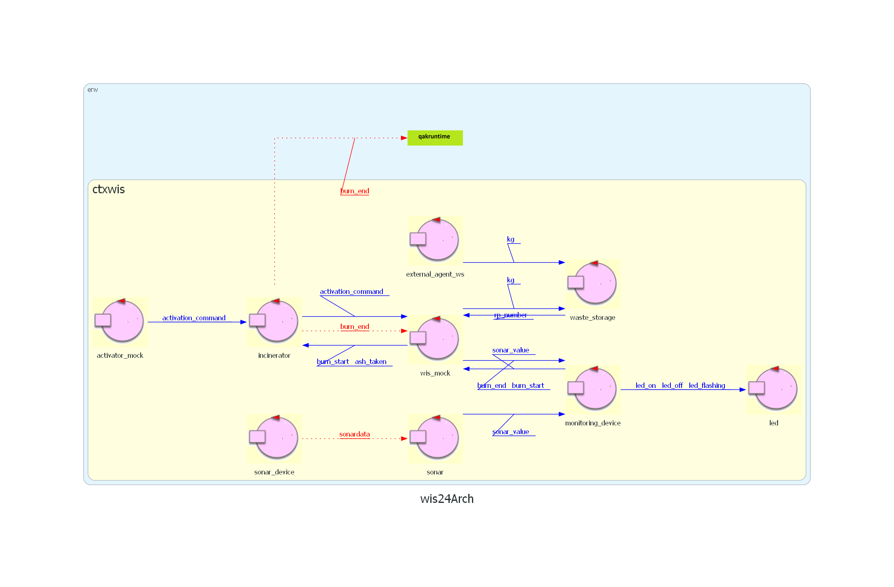
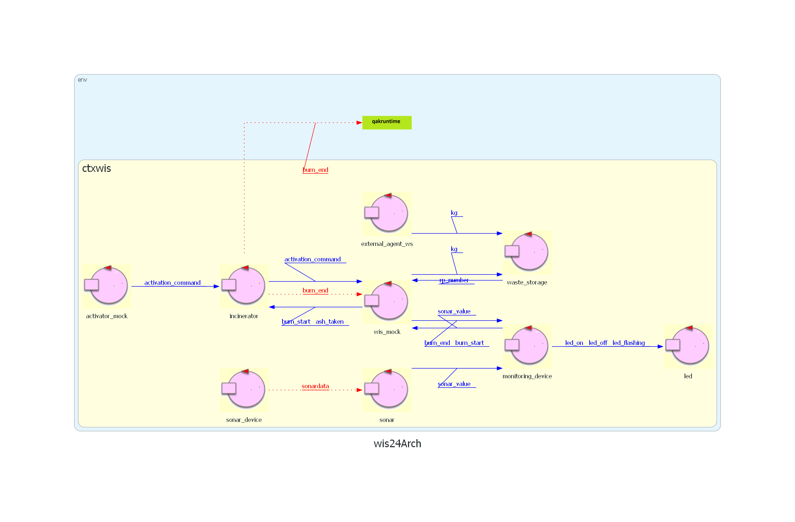
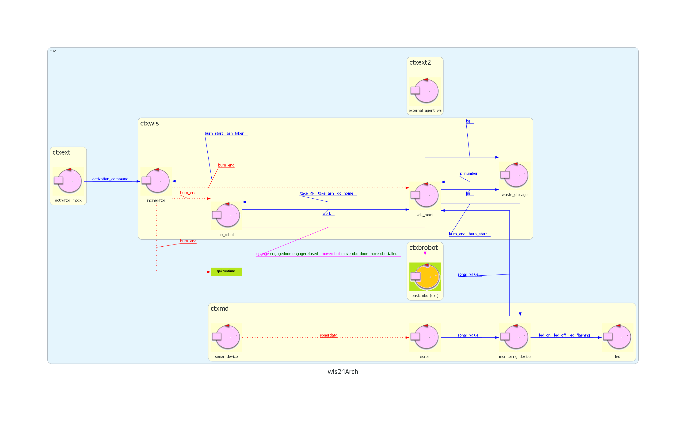

Introduction
SPRINT4: progettazione e sviluppo del OpRobot (Arasi e P'yeshchyk).
Nel precedente SPRINT siamo giunti a questo questa architettura iniziale di riferimento: 
Nel precedente SPRINT siamo giunti a questo questa architettura iniziale di riferimento: 
Requirements
Requirement analysis
Service Area
Spazio rettangolare che puo essere descritto come spazio euclideo delimitato da bordi.La stanza viene rappresentata da una griglia di quadrati, dove ogni quadrato ha come lato il diametro della circonferenza che circoscrive il robot DR.
Quindi presupponendo di avere R=4 righe e C=6 colonne possiamo definire lu=ld=DR*C e lf=lr=RC*R.
Perciò la stanza verrà rappresentata da una matrice rettangolare map[R,C] in cui map[0,0] rappresenta il quadrato in alto a sinistra.
La stanza contiene C*R quadrati.
Su questo piano sono posizionate tutte le entità, in particolare tutte le porte rappresentano coordinate dove il robot si deve dirigere per svolgere le proprie mansioni:
OpRobot
Sappiamo che il OpRobot è un DDR robotfornito dal committente. Quindi si puo sfruttare il BasicRobot24 per interfacciarsi e comandarlo (ad esempio tramiteRequest step:step(X) o Request robot_move:robot_move(X)): per questo potrebbe essere considerato un POJO oppure un Attore.
Deve essere in grado di ricevere l'evento
Event burn_end:burn_end(X).
Ha la responsabilità di portare un RP per volta alla porta BURNIN. Il robot deve aspettare in HOME e dare priorità a svuotare la cenere dal Incinerator rispetto a gestire un nuovo RP. Deve recarsi quindi alla porta BURNOUT dopo aver ricevuto l'evento dall'inceneritore (
Event burn_end:burn_end(X)).OpRobot per eseguire i propri compiti dovrà recarsi in una cella libera confinante a ciascuna porta.
Ad esempio per andare a prendere a WASTEIN il robot dovrà recarsi in map[4,0].
L'OpRobot verrà sviluppato come un attore in quanto deve essere capace di ricevere i comandi da WIS e l'evento da Incinerator.
Modello dei requisiti

Problem analysis
GOAL: OpRobot.
In particolare per il movimento del robot utilizzeremo il comando:
Per le coordiante da inviare si fa riferimento alle posizioni di WASTEIN,BURNIN,BURNOUT,ASHOUT.
In quanto coordiantore del sistema WIS deciderà quando OpRobot deve muoversi a seconda dello stato di WasteStorage, AshStorage ed Incinerator.
Da requisito OpRobot riceve l'evento Burn_End, ma in quanto dovrebbe comunque aspettare la conferma da WIS per conoscere lo stato di AshStorage quest'ultimo non viene utilizzato e verrà preso in considerazione soltanto
Definiamo i seguanti messagi per la comunicazione:
OpRobot deve anche inviare messaggi a WIS per aggiornarlo sul suo stato, questo per permettere a WIS di inviargli i comadi corretti e per mostrare sulla GUI il suo stato.
Definiamo il seguante messagio per la comunicazione del proprio stato a WIS:
Si deve gestire il caso di ostacoli fissi e mobili.
Gli ostacoli fissi vengono gestiti in maniera automatica da basicrobot24 grazie al comando
Nel caso di ostacoli mobili invece è stato deciso di attendere dopo l'urto e di ritentare a riprendere il percorso.
OpRobot(Attore)
OpRobot deve interfacciarsi a BasicRobot per poter pilotare il DDR robot.In particolare per il movimento del robot utilizzeremo il comando:
Request moverobot:moverobot(R, C) Per le coordiante da inviare si fa riferimento alle posizioni di WASTEIN,BURNIN,BURNOUT,ASHOUT.
In quanto coordiantore del sistema WIS deciderà quando OpRobot deve muoversi a seconda dello stato di WasteStorage, AshStorage ed Incinerator.
Da requisito OpRobot riceve l'evento Burn_End, ma in quanto dovrebbe comunque aspettare la conferma da WIS per conoscere lo stato di AshStorage quest'ultimo non viene utilizzato e verrà preso in considerazione soltanto
take_ash .Definiamo i seguanti messagi per la comunicazione:
Dispatch take_RP:take_RP(N) Dispatch take_ash:take_ash(N) Dispatch go_home:go_home(N) OpRobot deve anche inviare messaggi a WIS per aggiornarlo sul suo stato, questo per permettere a WIS di inviargli i comadi corretti e per mostrare sulla GUI il suo stato.
Definiamo il seguante messagio per la comunicazione del proprio stato a WIS:
Dispatch work:work(X)
Si deve gestire il caso di ostacoli fissi e mobili.
Gli ostacoli fissi vengono gestiti in maniera automatica da basicrobot24 grazie al comando
Request moverobot:moverobot(R, C) una volta che la mappa della "service area" è stata caricata correttamente.Nel caso di ostacoli mobili invece è stato deciso di attendere dopo l'urto e di ritentare a riprendere il percorso.
Architettura logica
Test plans
Alla ricezione di take_RP verificare che il robot vada prima da WS poi BURNIN.
Alla ricezione di take_ash verificare che il robot vada da BURNOUT poi ASHOUT.
Infine invio dello stato di fine job_done (vedere sotto).
Project
Progetto
Il op_robot è un attore che come prima cosa cerca di fare engage col basicrobot24 e successivamente lo guida in base al suo stato. Ha vari stati dove esegue un azione con moverobot(X,Y) e aspetta reply da basicrobot24, questo per evitare che il robot esegua azioni prima di aver terminato la precedente.
Inoltre notifica il suo stato a WIS con work(X). In particolare X può assumere i seguenti valori per indicare il proprio stato:
Il op_robot è un attore che come prima cosa cerca di fare engage col basicrobot24 e successivamente lo guida in base al suo stato. Ha vari stati dove esegue un azione con moverobot(X,Y) e aspetta reply da basicrobot24, questo per evitare che il robot esegua azioni prima di aver terminato la precedente.
Inoltre notifica il suo stato a WIS con work(X). In particolare X può assumere i seguenti valori per indicare il proprio stato:
waiting_home moving_to_WASTEIN taking_RP moving_to_BURNIN putting_RP waste_in_incinerator moving_to_BURNOUT taking_ash ash_taken moving_to_ASHOUT dumping_ash going_home job_done Testing
Test1: come descritto di sopra, controlla questa sequenza di azioni moving_to_WASTEIN->moving_to_BURNIN->moving_to_BURNOUT->moving_to_ASHOUT->job_done
Deployment
Maintenance
Prossimi sviluppi
Nel prossimo SPRINT si procederà ad analizzare e sviluppare Incinerator, in particolare la sua capacità di essere attivo, bruciare RP e comunicarlo ad altri.
By Marko P'yeshchyk, mat: 0001103132, email: marko.pyeshchyk@studio.unibo.it

And Arasi Stefano, mat: 0001103134, email: arasi.stefano@studio.unibo.it
GIT repo: https://github.com/Marko-Pyeshchyk/Waste-Incinerator-Service.git
And Arasi Stefano, mat: 0001103134, email: arasi.stefano@studio.unibo.it
GIT repo: https://github.com/Marko-Pyeshchyk/Waste-Incinerator-Service.git